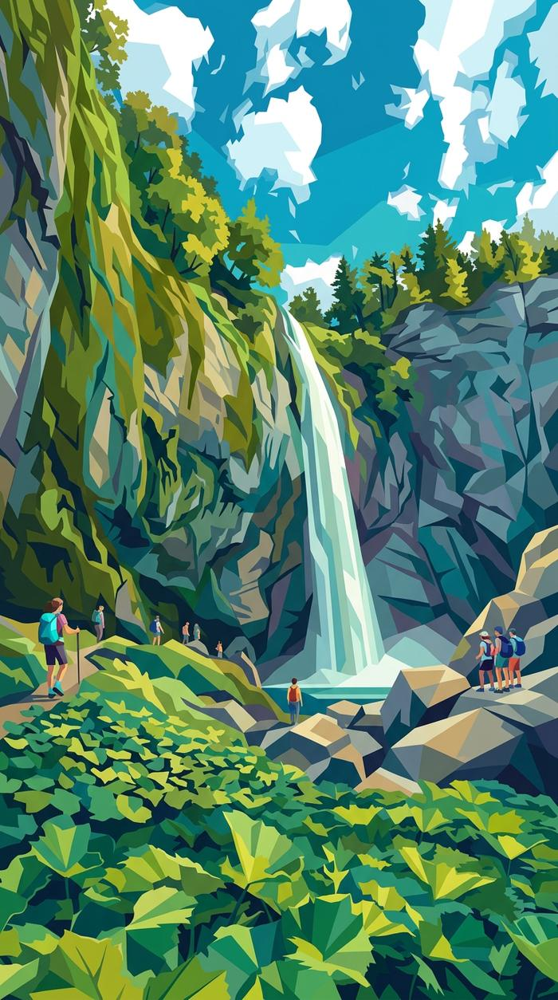

L'appartement
Arrivée autonome. Les codes de l'immeuble et de la boîte à clés vous sont envoyés le jour J vers 15h45 sur la messagerie Airbnb.
Trouver l'entrée
 1
1Depuis la rue Meynadier, marchez vers la place, puis prenez la rue des Chevreuils.
 2
2Sur la gauche, juste après l'angle du bâtiment : une porte discrète, en retrait. Entrez avec le code de l'immeuble.
 3
3L'ascenseur va jusqu'au 3ᵉ étage, puis il reste un étage à pied.
La boîte à clés ?
Elle est sur le palier, juste en face de la porte de l'appartement.
 1
1Arrivé en haut, avancez sur le palier.
 2
2Tournez le dos à la porte de l'appartement.
 3
3Au fond à droite, près de la fenêtre.
 4
4Sur la gauche du local. Entrez le code, puis appuyez sur les deux boutons latéraux.
Un petit message une fois installés me fait toujours plaisir 😊
Se garer
Il y a des places tout autour de l'immeuble et quelques parkings gratuits en ville.
Neige ? Une pelle est à votre disposition. Si la voiture patine : dégagez les roues, coupez l'antipatinage, accélérez doucement en 2ᵉ.
Wifi
Livebox Soleil Des Thermes 9bonjoursoleildesthermes9Votre cocon

28 m² au dernier étage, personne au-dessus : le calme est garanti.
Cuisine
- Plaques 2 feux, micro-ondes, petit four
- Frigo
- Cafetière filtre et Tassimo
- Bouilloire, grille-pain
- Vaisselle complète, verres à vin
Salon
- Table extensible (2 à 4 pers.)
- Canapé convertible 140×190
- TV avec box Orange
- Lave-linge
Chambre
- Lit double 140×190
- Draps, alèses, oreillers
- Placards, fauteuil
- Lit parapluie
Salle de bain
- Douche, lavabo, WC
- Sèche-serviettes
- Sèche-cheveux
- Réducteur de toilette
Draps fournis, le lit est à faire à l'arrivée. Serviettes non fournies : pensez à les apporter, avec des torchons. Aspirateur, serpillière et produits ménagers sont dans un placard de la chambre.
Mode d'emploi

Le thermostat central ne marche pas : réglez chaque radiateur directement sur l'appareil.

Eau, disque dans la tête, bouton. Si elle refuse, nettoyez le lecteur de code-barres. Tuto

Tirez l'assise, prenez couette et oreillers, rabattez le dossier. Tuto

Décollez-la du mur, dépliez le rabat. Chaises en plus dans le placard de la chambre. Tuto
Allumez la TV (petite télécommande Samsung), puis la box (grande télécommande Orange, un peu lente). Changez de chaîne uniquement avec la télécommande Orange.

Une petite machine est à votre disposition.

L'écoulement est un peu lent depuis toujours : c'est normal.

Pas de local dans l'immeuble : containers en ville. Carte des points
Règles
Le départ
Avant 12h, en toute autonomie. Comptez 20 à 30 minutes de ménage.
- Vaisselle lavée et rangée
- Poubelles déposées dans les containers
- Frigo et placards vidés
- Draps retirés et laissés au pied du lit
- Table, plan de travail et évier essuyés
- Sol balayé (serpillière si besoin)
- Douche et lavabo rincés
- Fenêtres fermées, chauffage baissé
- Clés remises dans la boîte à clés
Merci, ça fait vraiment la différence pour les voyageurs suivants 🙏 Et si vous avez deux minutes, un petit avis sur Airbnb me ferait très plaisir.
Visites
Tout part à pied du village. Les pistes sont à 2 km, avec des navettes gratuites toute la journée (appli Zenbus).

Téléphérique depuis le Mont-Dore, puis 15–20 min à pied jusqu'au sommet à 1 886 m.

Jusqu'au Salon du Capucin à 1 300 m : vue sur la vallée et départ de randonnées.

Une rando simple et très agréable depuis la ville, même pour les petites jambes.

Ski, fond, raquettes et chiens de traîneau l'hiver ; VTT et trail l'été.

Un édifice néo-byzantin superbe : mosaïques, fresques, eaux volcaniques.

Chambon (plage, paddle), Guéry (sauvage, à 1 200 m) et Pavin, à quelques minutes.

Château médiéval qui domine la vallée, animations en saison.

Applis Sancy Explorer et Visorando, et le groupe Facebook des voyageurs.
Mes restaurants préférés
Réservez quelques jours avant. En novembre, beaucoup ferment.

Le lac Pavin, à 25 minutes : le plus beau lac volcanique d'Auvergne.
Infos pratiques
Courses
Santé et services

Je suis là
Écrivez-moi sur la messagerie Airbnb ou par SMS :
06 44 23 37 30Urgence et je ne réponds pas : Sylvie, qui s'occupe de l'appartement, au 06 11 88 05 30.